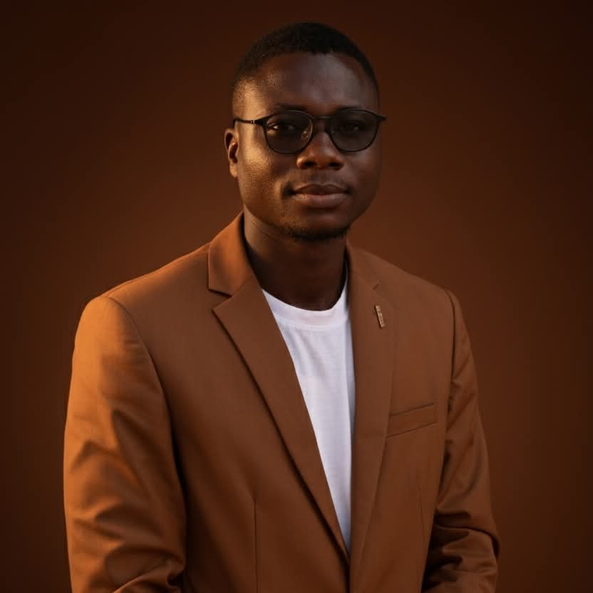

Olalekan Ajadi
Objective
To work in an organization where hard work and self-development are
encouraged, where my existing skills are challenged and to contribute
positively in a result-oriented environment.
Education
-
Marvelous Nursery and Primary School, Owode, Osun State (2008 - 2014)
- Besley College, Moniya, Oyo State (2014 - 2020)
- Oduduwa University, Ipetumodu, Osun State (2020 - 2024)
Work Experience
-
3JS Tech, Offa Garage, Ilorin, Kwara State (Graphic Design Intern)
(2023)
-
I created digital designs to market the company's product (WINQUIZ)
-
I handled customer complaints and supervised the product's online
community
-
Solid Tower International School, Ajibade, Moniya, Ibadan, Oyo State
(2025)
-
I teach Junior Secondary Schools 1-3 and Senior Secondary Schools
1-3 classes Computer Science and Data Processing respectively.
Skills
- Graphic Design
- UI/UX Design
- Web Development
- Teaching
Contact Me